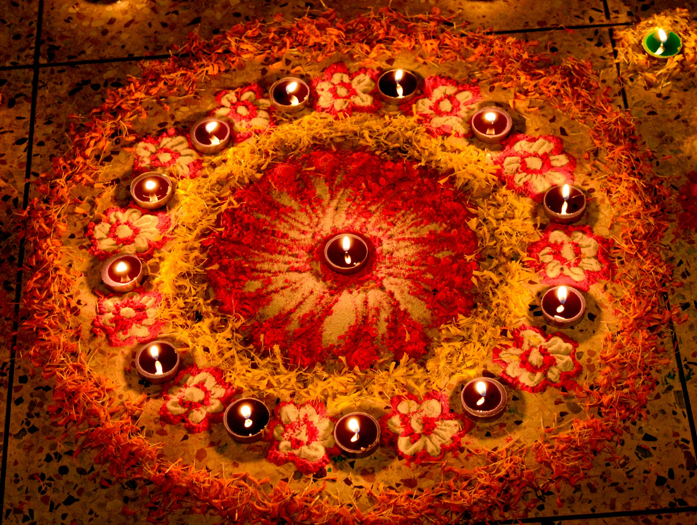

Festivals of India

India is renowned for its diverse and colorful festivals celebrated
across the country. Here are some major festivals:
-
Diwali: The Festival of Lights, symbolizing the
victory of light over darkness, is celebrated with fireworks,
lamps, and sweets. During Diwali, homes are decorated with
intricate rangoli designs, oil lamps (diyas), and electric lights.
Families perform religious rituals, exchange gifts, and enjoy
festive meals together. The festival signifies the return of Lord
Rama to Ayodhya after 14 years of exile.
-
Holi: Known as the Festival of Colors, Holi is
marked by vibrant colors, water balloons, and exuberant
celebrations. People gather to throw colored powders (gulal) and
water at each other, symbolizing the arrival of spring and the
victory of good over evil. Bonfires are lit the night before to
signify the burning of the demoness Holika. Traditional sweets
like gujiya and drinks like bhang are also enjoyed.
-
Eid: Eid marks the end of Ramadan with prayers,
feasts, and charitable acts. Eid-ul-Fitr is celebrated after a
month of fasting with special prayers at mosques, followed by
festive meals featuring dishes like biryani, kebabs, and sweet
delicacies like seviyan. It's a time for visiting friends and
family, exchanging gifts, and giving to the less fortunate through
acts of charity (zakat).
-
Christmas: Celebrated by Christians, Christmas
involves church services, festive meals, and decorations. Churches
hold midnight mass, and homes are adorned with Christmas trees,
lights, and nativity scenes. Traditional foods like plum cake,
roast turkey, and cookies are prepared. The festival commemorates
the birth of Jesus Christ and is a time for family gatherings and
spreading joy and goodwill.
Each festival has its unique traditions and local variations,
reflecting India's rich cultural diversity.
Traditional Dance Forms
India's traditional dance forms are a testament to its rich cultural
heritage. These dances are not only a form of entertainment but also
a means of preserving the history and traditions of the regions they
originate from. Some prominent dance forms include:
-
Kathak:
A dance form from North India characterized by intricate footwork,
spins, and expressive storytelling. Kathak has evolved over
centuries, influenced by both Hindu and Muslim cultures, and often
includes themes from epics like the Mahabharata and Ramayana. The
dance is accompanied by classical music and instruments like the
tabla and harmonium.
-
Bharatanatyam:
Originating from Tamil Nadu, Bharatanatyam is known for its grace,
rhythmic movements, and expressive storytelling. This dance form
is performed by both men and women and is usually accompanied by
Carnatic music. The dancers wear elaborate costumes and makeup,
and use a range of hand gestures (mudras) and facial expressions
to convey emotions and stories.
-
Odissi:
From Odisha, Odissi is celebrated for its lyrical movements and
expressive dance. Odissi is one of the oldest surviving dance
forms in India, often depicting themes related to Lord Jagannath
and the divine love stories of Radha and Krishna. The dance is
known for its fluid movements, sculpturesque poses, and intricate
footwork.
-
Kathakali:
A classical dance-drama from Kerala featuring elaborate costumes
and expressive storytelling. Kathakali performances are grand
spectacles, often lasting for several hours, and involve detailed
facial makeup, colorful costumes, and intricate hand gestures. The
stories depicted are usually from Hindu epics, and the performance
is accompanied by traditional music and percussion instruments.
These dance forms not only entertain but also preserve the rich
cultural traditions of their regions. They provide a window into
India's diverse cultural heritage, showcasing the country's history,
mythology, and classical arts.
Indian Cuisine

Indian cuisine is known for its variety and rich flavors. Each
region offers unique dishes, such as:
-
North Indian Cuisine: Rich dishes like butter
chicken, biryani, and naan bread. The use of dairy products such
as ghee and yogurt is common, and the cuisine is characterized by
the use of aromatic spices like cardamom, cumin, and cloves.
Popular vegetarian dishes include paneer tikka and aloo gobi.
-
South Indian Cuisine: Rice-based dishes like
dosa, idli, and sambar. This region's cuisine is known for its
tangy and spicy flavors, often using ingredients like tamarind and
coconut. Staple foods include a variety of chutneys and curries
like rasam and kootu, which are often served with rice.
-
West Indian Cuisine: Spicy dishes including pav
bhaji and dhokla. The cuisine varies from the coastal seafood
dishes of Goa to the vegetarian fare of Gujarat. Popular dishes
include Goan fish curry and Maharashtrian puran poli. Street food
like vada pav and bhel puri is also famous in this region.
-
East Indian Cuisine: Sweet and savory dishes like
rasgulla and pitha. This region is known for its sweets,
especially those made from milk, such as sandesh and mishti doi.
Savory dishes include fish curries and bamboo shoot-based dishes,
reflecting the culinary influences of neighboring countries.
Indian cuisine is a reflection of its history, climate, and cultural
influences, offering a rich culinary experience. The diversity in
ingredients and cooking techniques is a testament to India's rich
agricultural heritage and historical trade links.
Traditional Clothing
Traditional Indian clothing varies greatly across regions. Key
garments include:
-
Sari: A traditional garment for women, consisting
of a long piece of cloth draped elegantly. The sari can be worn in
various styles, each representing a different region or community.
It is often paired with a blouse (choli) and a petticoat (ghagra),
and decorated with intricate embroidery, beadwork, or prints.
-
Lehenga: A traditional skirt worn with a blouse
and dupatta, often for special occasions. The lehenga is
characterized by its elaborate designs, heavy embellishments, and
vibrant colors. It is commonly worn during weddings and festivals,
representing a blend of royal heritage and contemporary fashion.
-
Kurta: A long tunic worn by men, usually paired
with pajama or churidar. The kurta can be simple or heavily
adorned, making it suitable for both casual wear and formal
occasions. It is often made from breathable fabrics like cotton or
silk, reflecting the climatic conditions of the region.
-
Dhoti: A traditional garment worn by men,
consisting of a cloth wrapped around the waist and legs. The dhoti
is usually white or cream-colored, symbolizing purity and
simplicity. It is worn in various styles across different states,
such as the veshti in Tamil Nadu or the mundu in Kerala.
Urban areas also feature modern attire, reflecting a blend of
traditional and contemporary styles. The influence of Western
fashion can be seen in the popularity of jeans, t-shirts, and suits,
often worn alongside traditional garments for a unique fusion of
cultures.
Music and Performing Arts
Indian music and performing arts are diverse and deeply rooted in
tradition. Some key elements include:
-
Classical Music:
Indian classical music is divided into two major traditions:
Hindustani (North Indian) and Carnatic (South Indian). Both
traditions emphasize the intricate rhythms and melodies, known as
ragas, and the sophisticated rhythmic cycles, known as talas.
Instruments such as the sitar, tabla, veena, and mridangam are
central to classical performances.
-
Folk Music:
Folk music varies widely across different regions of India, each
with its unique style and instruments. Bhangra from Punjab is
characterized by energetic beats and dance, while Lavani from
Maharashtra is known for its lively and rhythmic tunes. Baul music
from West Bengal is mystical and spiritual, often performed by
wandering minstrels.
-
Bollywood Music:
Bollywood music, which accompanies Indian cinema, is a fusion of
traditional and contemporary styles. It includes a wide range of
genres from classical and folk to pop and hip-hop. Bollywood songs
are an integral part of Indian culture, often dictating the trends
in music and dance.
Music plays a vital role in celebrations, rituals, and entertainment
across the country. It reflects India's cultural diversity and has a
profound impact on social and religious life.
Languages and Literature
India's linguistic diversity is mirrored in its rich literary
traditions. Major languages include Hindi, Bengali, Tamil, and Urdu.
Literary contributions range from ancient epics to contemporary
novels:
-
Ancient Texts:
Indian literature boasts some of the oldest texts in the world.
The Vedas and Upanishads are foundational scriptures of Hindu
philosophy. The Ramayana and Mahabharata are epic narratives that
have shaped Indian cultural and religious thought for millennia.
-
Classical Poetry:
Classical poetry in India includes the works of Kalidasa, whose
play "Shakuntala" is renowned worldwide. Mystic poets like Kabir
and Mirabai contributed significantly to devotional literature,
blending spiritual insight with poetic beauty.
-
Modern Literature:
Modern Indian literature reflects the country's social, political,
and cultural changes. Rabindranath Tagore, who won the Nobel Prize
in Literature, wrote in Bengali and is famous for his poetry,
novels, and songs. Contemporary writers like Chetan Bhagat have
popularized English-language fiction, addressing modern India's
aspirations and struggles.
Indian literature is a testament to the country's profound
intellectual and artistic heritage, encompassing a vast range of
themes, styles, and languages.
Architecture
Indian architecture showcases a blend of styles and historical
influences. Notable examples include:
-
Taj Mahal:
The Taj Mahal, a UNESCO World Heritage Site, is an iconic example
of Mughal architecture. Built by Emperor Shah Jahan in memory of
his wife Mumtaz Mahal, this white marble mausoleum is renowned for
its symmetrical beauty, intricate carvings, and stunning gardens.
-
Qutub Minar:
The Qutub Minar in Delhi is a towering minaret that exemplifies
early Islamic architecture in India. Built in the 12th century, it
stands as a symbol of the Delhi Sultanate's architectural prowess
and features intricate carvings and verses from the Quran.
-
Hampi Temples:
The ruins of Hampi in Karnataka are a UNESCO World Heritage Site,
known for their magnificent temples, palaces, and marketplaces.
The Vijayanagara Empire's capital, Hampi, is celebrated for its
exquisite architecture and intricate stone carvings.
These architectural marvels reflect India's rich cultural and
historical legacy, blending various styles and influences over
centuries.
Quotes and Testimonials
"India lives in several centuries at once, a country of ancient
traditions and modern possibilities." -
Indian Historian
"The diversity of India is its strength, and the unity is its
power." - Indian Philosopher
Timeline of Indian Culture
Ancient Times
The Indus Valley Civilization, with its advanced urban planning
and rich cultural heritage.
Medieval Period
The rise of empires like the Mauryan and Mughal, contributing
significantly to Indian art and architecture.
Colonial Era
The impact of British colonialism on Indian society, culture,
and economy.
Modern India
The post-independence era, characterized by rapid economic
growth and cultural renaissance.